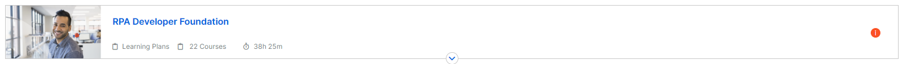
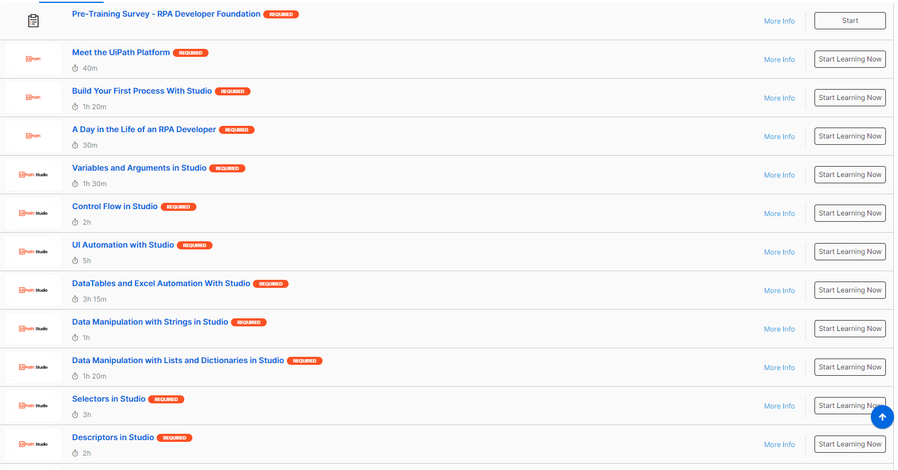
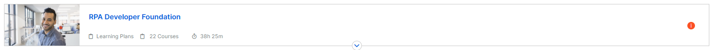
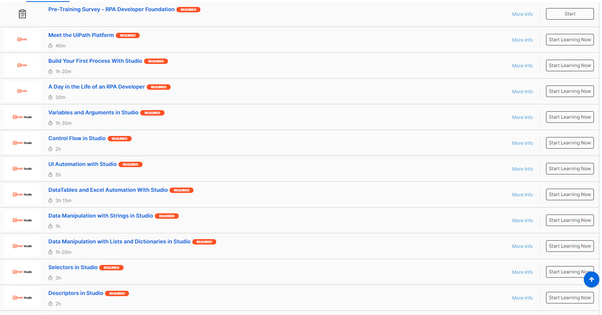

Stage de première et deuxième année
Contexte
J’ai effectué mon stage de première et deuxième année un chez ODDO-BHF un fonds d’investissement franco-allemand, mon tuteur Grégory Ganeau (Reponsable du développement informatique) m’a affecté à l’équipe de RPA (Robotic Process Automation).
Mission durant le stage
Tout d’abord lors de la signature de mon stage, j’ai dû remplir certains document dont un accord de confidentialité , je travaillais avec des données confidentielles, je ne pense pas avoir l'autorisation de montrer des images, d'où le manque éventuel d'image.
Mission 0: l'une des premières tâche qui m'a était confiée, était de suivre une formation en ligne de chez UiPath Academy afin de pouvoir utiliser le logiciel d'automatisation UiPath Studio. Cette formation m'a fait comprendre ce qu'était la RPA (robotic process automation) il s'agit là de l'automatisation des tâches récurrentes efféctuées par l'humains, il permet première un gain de temps et un allégement de la quantité de travaille pour d'autres équipes.
 
Composé de 22 modules, durant lesquels je vais apprendre l'utilisation des différentes activités du logiciel.
L'interface du logiciel :

Mission 1: Après la formation, on m'a donnée comme mission l'automatisation et l'extraction de données d'un fichier Excel A et d'un autre fichier Excel B concernant des transations bancaires de différentes banques, joindre les informations et créer un fichier CSV "recap" concernant les banques concernées.
Mission 2-3: Même principe que la mission 1
Mission 4: Extraction de données d'un fichier Excel A et B, récupérer les données qui m'intérrèssait, effectuer un calcul avec les informations récoltées et les insérer dans le fichier A qui est le fichier template.
Mission 0: l'une des premières tâche qui m'a était confiée, était de suivre une formation en ligne de chez UiPath Academy afin de pouvoir utiliser le logiciel d'automatisation UiPath Studio. Cette formation m'a fait comprendre ce qu'était la RPA (robotic process automation) il s'agit là de l'automatisation des tâches récurrentes efféctuées par l'humains, il permet première un gain de temps et un allégement de la quantité de travaille pour d'autres équipes.
 
Composé de 22 modules, durant lesquels je vais apprendre l'utilisation des différentes activités du logiciel.
L'interface du logiciel :
Mission 1: Après la formation, on m'a donnée comme mission l'automatisation et l'extraction de données d'un fichier Excel A et d'un autre fichier Excel B concernant des transations bancaires de différentes banques, joindre les informations et créer un fichier CSV "recap" concernant les banques concernées.
Mission 2-3: Même principe que la mission 1
Mission 4: Extraction de données d'un fichier Excel A et B, récupérer les données qui m'intérrèssait, effectuer un calcul avec les informations récoltées et les insérer dans le fichier A qui est le fichier template.